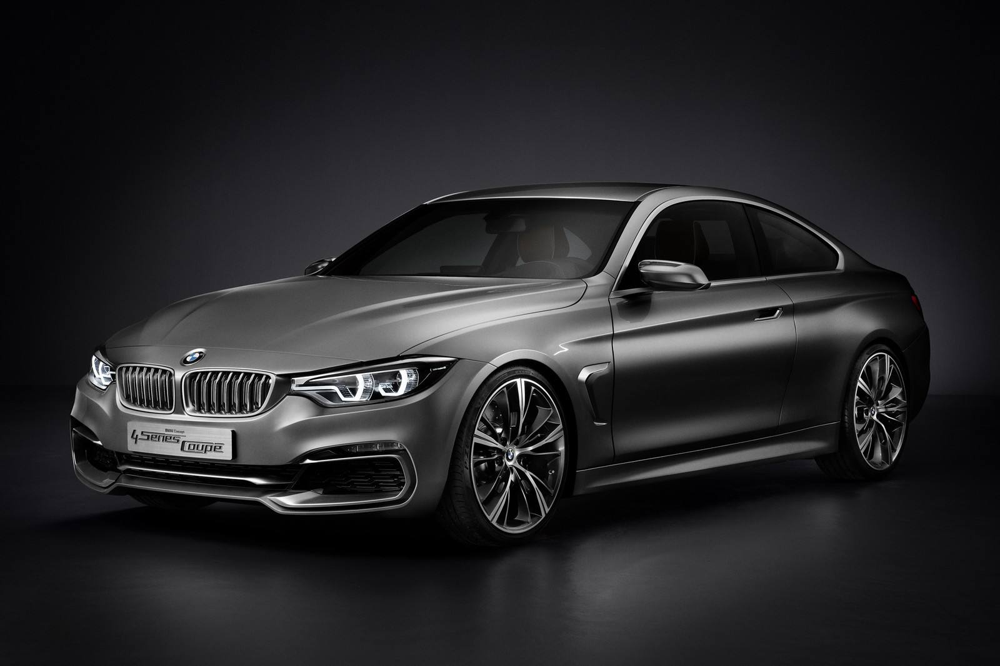
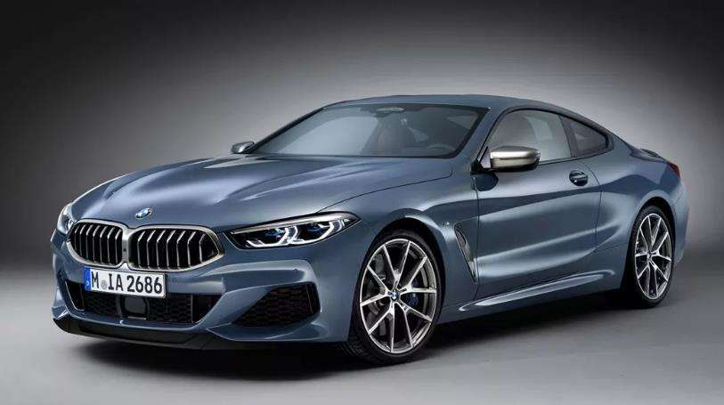

BMW's even number of models are basically coupe style, such as 2
series coupe, 4 series coupe and 8 series coupe. There is also a special
BMW Z series, which has only one car, the Z4.


BMW 4 and 8
4: The 4 Series is actually an extended version of the 3 Series,
that is, the two-door sedan version of the 3 Series. The 4 series was
first produced in 2013, and he also has a convertible series. The
advantage of coupe is that it can bring the feeling of driving passion.
8: BMW 8 series is BMW's new car series, it inherits the gene of
BMW 6 series, is BMW's top coupe model at present.It will be powered by
a maximum 4.4 liter engine, which can produce 600 horsepower. This
represents BMW's highest level of coupe models.